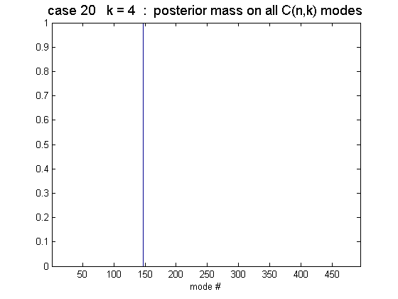
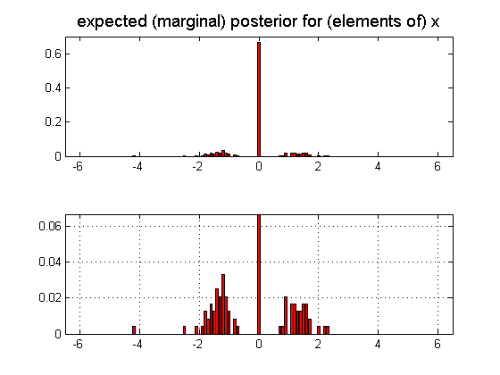
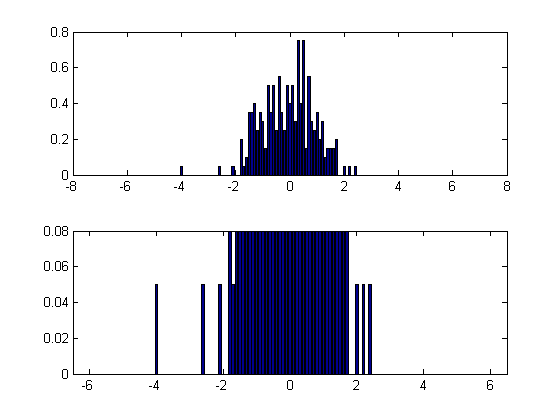

Demo of what constitutes plausible sparsity prior for linear regression
MODEL: y = Ax + noise; s.t. card(x) = k
=============================================================================
MODEL: y = Ax + noise; s.t. card(x) = k
QUESTION: what constitutes a "plausible" sparsity-inducing prior for any given problem (here the sparse linear model above)? For example, should p(x) really be a Laplacian !?
ANSWER: the most plausible p(x) should resemble the ensemble average of all possible posteriors found using a Reference Analysis (with a suitably flat prior for the given model). This expectation p(x|y) should be taken w.r.t. all future datasets {A,y} as well as different noise settings, etc.
METHOD: create a Monte Carlo ensemble of test cases according to the model, map out all posterior modes in each case (by exhaustive enumeration) and form a (weighted) histogram of all such posterior modes. Since {x_i} are deemed exchangeable the elements of x can be pooled to give a single marginal prior p(x_i) that is the same for all i. This expected marginal posterior is here plotted & visualized as the empirical proxy for the "right" sparsity prior for the model.
------------------------------------------------------------------------- THINGS TO NOTE:
o) the expected posterior is always a point-mass mixture ("spike-n-slab") with the atomic component at 0 having probability mass = (n-k)/n
o) so the question becomes what should the continuous component of this mixture look like? For example, does it look like a Laplacian?
o) since all n-choose-k posterior modes are being found (using subsets1.m) beware of combinatorial explosion with large n (or just keep k very small)
------------------------------------------------------------------------- THINGS TO TRY:
o) run the script as is with the default case of {n=12, k0=12, k=4} This represents a "dense" true x0 (k0=12) representing a non-sparse problem that is forced to be sparse (k=4) perhaps for budget reasons
o) set k0=4 (with k=4); this is now a sparse recovery problem where you happen to know the true sparsity (k0) beforehand (not very realistic though)
o) increase the noise by setting noise=1.0 to see how the # of significant posterior modes in each MC test case increases
o) try setting k0 < k, so the problem is actually sparser than you think! note the increase in the # of significant posterior modes as a result.
o) try varying the aspect ratio of design matrix A by changing m (# of obs) and note how the # of significant posterior modes changes with m
o) A, x, y and noise can be sampled as Uniform, Gaussian or even Binary see the commented-out portions in the code below, try changing these.
o) you can explore the prior for all k (i.e., all 2^n sparsities) thus not commiting to any one k as being the "right" sparsity. If you assume each k to be equally likely a priori, then just pool over MC runs for each k=1:n-1. This can be done by setting k=0 (as a special flag for this case)
------------------------------------------------------------------------- Baback Moghaddam baback@jpl.nasa.gov 02/11/08 ------------------------------------------------------------------------- NOTE: this script needs Raanan Yehezkel's "subsets1.m" function
%PMTKauthor Baback Moghaddam %PMTKdate 11 feb 2008 if ~exist('n','var'), n=12; end % n = dimension of x (#cols of A) if ~exist('m','var'), m=10*n; end % m = dimension of y (#rows of A) if ~exist('k0','var'), k0=n; end % k0 = true sparsity (generative) if ~exist('k','var'), k=max([2 fix(n/3)]); end % k = desired sparsity (recovered) if ~exist('noise','var'), noise = 0.1; end % noise = std dev of additive noise if ~exist('nCases','var'), nCases = 20; end % nCases = no. of MC trials if ~exist('newA','var'), newA = 0; end % newA = mix new & old A matrices figure xr = [-6.5:0.1:6.5]; % discretized x range x = zeros(n,1); Px = zeros(1,length(xr)); % base design matrix A0 = randn(m,n); % Gaussian A %A0 = rand(m,n); % Uniform A %A0 = sign(randn(m,n)); % Binary A if noise==0, noise = 1e-6; end % need finite noise if k0==0, k0 = fix(n/2); end; % k0 can not be 0 k0 = min([k0 n]); % k0 must be <= n % single-k (n-choose-k) or all-k (2^n - 2 patterns) if k > 0, kset = k; else, kset = 1:n-1; end for kk = kset sets = subsets1(1:n,kk); Ns = length(sets); Xmode = zeros(Ns,n); Emode = zeros(Ns,1); for c = 1:nCases % ------------------------------------- MC loop % sample a (blend of new & old) design matrix A = (1-newA)*A0 + newA*(randn(m,n)); % Gaussian update %A = (1-newA)*A0 + newA*(rand(m,n)); % Uniform update % sample a new x0 x0 = randn(n,1); % Gaussian x %x0 = 3*(2*rand(n,1)-1); % Uniform x %x0 = sign(randn(n,1)); % Binary x % true x0 is k0-sparse (recovered x will be k-sparse) idx = randperm(n); x0(idx(1:n-k0)) = 0; trueWeights(:,c) = x0; % resulting y for linear model %y = A*x0 + noise*(2*rand(m,1)-1); % Uniform noise y = A*x0 + noise*randn(m,1); % Gaussian noise % add some non-linearity? %y = 7*tanh(3*y/max(abs(y))); % find all posterior modes (MAP sols under a flat prior) for i = 1:Ns x(:) = 0; idx = sets{i}; x(idx) = A(:,idx) \ y; Xmode(i,:) = x'; Emode(i) = norm(A*x-y)^2; % SSD end % weigh each mode by its probability (via its residual) logprob = Emode/(2*noise^2); logprob = logprob - min(logprob); Pmode = exp(-logprob)/sum(exp(-logprob)); % viz all posterior modes bar(1:Ns,Pmode); title(['case ' num2str(c) ' k = ' num2str(kk) ' : posterior mass on all C(n,k) modes'],'fontsize',14) xlabel('mode #'), axis([0.5 Ns+.5 0 1]); drawnow % what if you had equal-weighting? %Pmode = ones(Ns,1)/Ns; % but this is very unrealistic! % accumulate marginal histogram (x_i are exchangeable) for i = 1:Ns h = hist(Xmode(i,:),xr); Px = Px + h*Pmode(i); end end % ---------------------------------------------- end MC loop end % k loop % normalize marginal posterior Px = Px/sum(Px); % viz posterior histogram figure subplot(211) h=bar(xr,Px); set(h,'facecolor',[1 0 0]) axis([min(xr) max(xr) 0 max(Px)*1.05]) title('expected (marginal) posterior for (elements of) x','fontsize',14) % do a histogram closeup subplot(212) h=bar(xr,Px); grid on; set(h,'facecolor',[1 0 0]) axis([min(xr) max(xr) 0 2*max(Px(1:fix(length(xr)*.49)))]) Pw = zeros(1,length(xr)); for i = 1:nCases h = hist(trueWeights(:,i),xr); Pw = Pw + h/nCases; end figure; subplot(2,1,1); bar(xr, Pw); subplot(2,1,2); bar(xr, Pw); ylim = get(gca, 'ylim'); axis([min(xr) max(xr) 0 ylim(2)*0.1])  